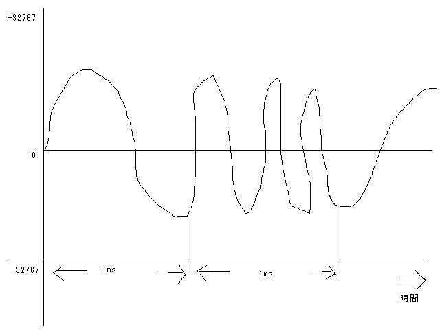

SoundEffectチュートリアル
SoundEffectクラスは、ファミコン的な音をプログラムで生成することができるクラスです。
他にはない微妙な機能だと思うので、ここではその使い方と考え方を説明します。
おおざっぱに言うと、DirectSoundのバッファをある程度自由に編集することができます。
ある程度、というのは、完全に自由なのではなく、設定できるのは波形の種類と、周波数、ボリュームのみだからです。
SoundEffect.newの第1引数で指定した時間の分だけバッファが作成され、ｎｅｗに渡したブロックが返す周波数とボリュームを、生成する波形情報に適用します。
デフォルトでは1ms単位にブロックが呼ばれますので、1msごとに周波数とボリュームを変更することができます。
これにより、音程を上げ下げしたり、音がだんだん小さくなっていくような音を作ることができます。

絵がしょぼいのはなんとも言い訳できません。
あとで綺麗に描ける人にお願いするつもりですが、とりあえずはこんな感じで。
SoundEffectでは、ブロックの返り値で指定された周波数とボリュームを単位時間のあいだ自動的に継続して、波形を生成します。
単位時間が過ぎると再びブロックが呼び出され、次の周波数とボリュームを受け取ります。
この図で言うところの、波形の横への伸びが周波数、縦の高さがボリュームとなります。
これがこのまま、サウンドバッファのイメージになります。
以下に具体例を示します。これはDXRubyのサンプルに入っているコードです。
v = 100.0
c = 60
f = 1300
s1 = SoundEffect.new(500) do
c = c - 1
if c < 0 then
v = v - 0.2
f = 1760
end
[f, v]
end
この例では、500msのバッファを作成し、周波数fは1300Hz、ボリュームは100ではじまります。
1msごとにカウンタcがデクリメントされ、60ms経過したら周波数を1760Hzに変更、ボリュームを0.2ずつ下げていきます。
このようなコードを書くことで、「かきーん」というどこかで聞いたことがあるようなないような音を作ることができます。
また、SoundEffectには和音を生成する機能があります。
例を示します。これもサンプルに入っているコードです。
s2 = SoundEffect.new(1000,WAVE_TRI) do # 低音は三角波
[110, 80]
end
s2.add(WAVE_RECT) do # 矩形波
[275, 40]
end
s2.add(WAVE_RECT) do # 矩形波
[330, 40]
end
この例ではファミコンのPSG音源を再現しています。
矩形波はファミコンのメインの音、三角波は低音の波形で、SoundEffect.newの第2引数で指定することができます。
SoundEffect#addメソッドは、newで生成したバッファに対して、新しい波形を合成する機能です。
合成すると単純に音が追加されますが、波形の高さも上がるので、合計のボリュームは255までになるようにしないと波形が歪んでしまいますので注意してください。
もうひとつサンプルからの例ですが、次のコードは簡易FM音源を再現します。
f = 0
v = 150.0
s3 = SoundEffect.new(500, WAVE_SIN) do
f = f + 1
v = v - 0.2
[880 + Math.sin(f) * 200, v]
end
計算式はかなりいい加減ですが、出力する周波数に対して、sin波で周波数変調をかけています。
これが（たぶん）FM音源の原理です。
fの増分を0.1や10にしてみたり、増幅値を200から変更してみたりすると、音が変わるのがわかると思います。
たぶん、想像を絶する変わり方をするでしょう。
FM音源は音を思い通りに作るのが非常に難しい音源でしたが、SoundEffectによる周波数変調も同じように難しいものなので、このやり方で音を作るのはかなりの試行錯誤がいるのではないかと思います。
あと、このコードでは2オペレータの再現になりますが、fの値の増分をMath.sinで作れば3オペレータ、4オペレータと増やすことができますし、sinでなく自分でなんらかのコードを書けばsin波以外の波形で変調することもできます。
ネタとしては面白いですが、それできちんとした音を作るのはとても大変なので、楽しめる人のみ頑張ってみてください。
そして、いい音や便利なコードができたらぜひ公開をお願いします。
ちなみに恥ずかしい話ですが作者も使いこなせておりません。
最後に、るびま用サンプルで使ったノイズ生成のコードを示します。
v = 80
@@sound = SoundEffect.new(4000,WAVE_RECT, 5000) do
v = v - 0.03
[rand(300), v]
end
ノイズは周波数をランダムで変更することで生成できます。
音の分解能が1ms単位だと綺麗なノイズにならないので、第3引数に5000を設定して、0.2ms単位でブロックを呼び出すようにしています。
周波数はrand(300)でランダムを生成していますが、この値の幅や、最低値などを変更すれば違ったノイズを作ることができますし、それらを変動させたり、SoundEffect#addで合成するのも効果的でしょう。
ここで例示したSoundEffectの使い方はほんの一例です。
柔軟な機能ですのでアイデア次第で色々な音を作ることができるでしょうし、例えば大きなバッファを作ってうまいことデータを生成できれば、MMLを入力してファミコンのBGMを再生するようなことも可能でしょう。
いまどきのゲームの音ではありませんが、ミニゲームなんかには向いているかもしれません。
ぜひとも有効活用して、あなたのゲームに楽しい音を加えてみてください。